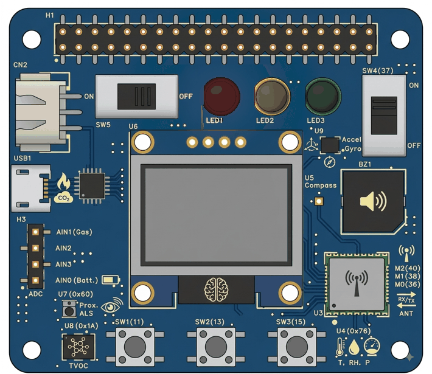

LilEx5 · Pico IoT Module · Activity 11
Every program you have written so far did the talking. It decided, it printed, it measured, it drew. Today the board does the listening — and a switch on a web page, which could be in the next room or in another country, turns on a light on your desk.
Build a switch on a web page, make your board listen to it, and turn the red LED on and off by clicking it. Nobody has to be anywhere near the board. That is the whole point.
You have made a light come on before — in Activity 1, by typing a line, and in Activity 5, by holding a button. Both of those needed you to be there. Today the decision is made somewhere else entirely, travels across the internet, and arrives at your board as a word.
Asking a server to tell you the moment something changes, instead of asking it over and over.
def — writing a job down, giving
it a name, and not running it.
You never call today’s function yourself. You give the name away, and the message calls it.
Your own dashboard, your own feed, and a toggle that sends one of exactly two words.
print(),
if and else, ==, not, variables, comments,
indentation, and the whole business of getting a library file onto the Pico. All of it comes back
today and none of it is taught again.There are only two things a small device can do with a feed on a server. It can publish — put something in. Or it can subscribe — ask to be told what turns up.
Everything the board has done so far has been the first sort. It worked something out and it said so: a number in the Shell, a word on the screen. Today it does the opposite. It says, once, “tell me the moment anything lands in this box”, and then it gets on with its loop and waits.
This is the part worth stopping on, because it is not obvious and it explains why the thing works from another country. The web page does not send anything to your board. It writes into a box on a server. Your board reads out of that same box. Neither one has any idea where the other one is, and neither one needs to know.
Before any of that can happen, the board has to join a WiFi network — the same thing your phone does, and for once your program has to do it by hand.
Joining takes a moment. It is not instant, and it is not guaranteed: the board asks, the router thinks about it, and a second or two later the board is either on the network or it is not. So the program has to wait until the joining has actually finished before it tries to talk to anything.
while loop with a real question in itEvery loop you have written so far has been while True — a question whose answer
is always yes, which is why those loops go on for ever. Today’s waiting loop is the other kind.
Its question is a real one, the answer changes while the program is running, and the loop stops the
moment it changes.
not is finally being written, not just read
In Activity 6 you were told to learn to read not
and not to reach for it. This is the place it earns its keep: the loop should run while the board
is not yet connected, which is exactly how you would say it out loud.The box in the middle has to live somewhere. We are going to use Adafruit IO — a free service that gives you feeds to put things in and a dashboard to look at them on. It takes about two minutes to set up and it is the longest set of clicking in this whole module.
This trips people up for the first ten minutes and then never again. The feed is the box that holds the value and remembers it. The dashboard is a page a human looks at, with things on it that read from feeds and write to them. You need one of each, and only the feed’s name ever appears in your program.
Go to io.adafruit.com and sign up. Once you are in, click Feeds in the black bar along the top. Your username is shown on the left — write it down exactly as it is spelt, including any capital letters or dashes.
ledClick + New Feed. Name it led, in lower case, with nothing else in the name. The description is for you and can say anything. Click Create.
Your brand new account already came with a Welcome Feed. Leave it alone; it is not the one we are using.
led and the key is led and there is nothing to get wrong.
Type LED and you have given yourself a puzzle for later.Click the feed name to open it, then click the gear beside Feed Info. There is a row marked MQTT, and what it shows is the address your program will use. It has three parts joined by slashes.
The round yellow key button sits at the top right of every page on the site. Click it and you get two things: your username again, and your Active Key, which is a long line of letters and numbers. Copy both, all of it.
Click Dashboards in the black bar, then + New Dashboard. Call it anything you like — LED Control is fine. This name is only ever seen by humans, so spaces and capitals do not matter here.
Open it, click + New Block, and choose the very first one: the Toggle, which looks like a switch that says ON.
led feed, and set the two wordsTick the box beside led — not Welcome Feed — and click Next step. Give the block a title, and leave Button On Text as ON and Button Off Text as OFF. Scroll down and press Create block.
Your switch works. Click it and the word changes, the colour changes, and a value is sent right now. Go back to Feeds → led and you will see one row for every click, newest at the top.
And absolutely nothing happens on your board, because nothing on your board has asked to be told yet. That is not a fault. That is the other half of the lesson, and it starts now.
Two new pieces of Python, and they belong together: def, which writes a
job down and gives it a name, and handing that name to somebody else so that they can run it.
Everything you have written so far ran the moment the program reached it. def is the
first thing in this module that does not. It writes a set of instructions down under a name, and then
the program walks straight past them. Nothing inside happens — not yet, and possibly not ever.
This is the sentence to remember from today. You write the job, and then you give the name of it to the message library, once. From that moment on, the library runs it every time something arrives. You never call it. Not anywhere. If you find yourself calling it, the program has gone wrong.
Somebody has to look. The message library will not interrupt your program out of nowhere — it can only run your job at a moment when you have given it the chance. That is what the last new line does: it asks once, and comes straight back whether or not there was anything.
Three things have to line up before a click on a web page moves anything on your desk, and it is much easier to see them than to read about them. Flip the switch. Then subscribe, and flip it again. Then find out what happens if nobody ever asks whether a message came.
Same job as Activity 7 and Activity 8: something MicroPython does not come with has to be put onto the Pico first. Only the way you get it there is different this time.
The library is called umqtt.simple. It is somebody else’s tool, so you do not type it out — that rule has not changed since Activity 7. What has changed is that the two routes genuinely get it in two different ways, and the difference shows up in your very first import line.
umqtt_simple.pyThe same ▾ menu beside the file tabs, the same New file…, the same paste as Activity 7. The file comes from the STEM LAB library repository or from wherever your teacher has put it.
umqtt_simple.py. On the real board it lives in a folder called
umqtt, which is why the import line has a dot in it there and an underscore here.
One character, two routes.Tools → Manage packages…, search for micropython-umqtt.simple, and click Install. The Pico has to be plugged in and Thonny has to be connected to it, or the file goes onto your computer instead and nothing works.
This is the alternative that Activity 7 showed you in a <details> and never
used. Here it is the easy way, because the library is a published package rather than one file in
a repository.
View → Files. In the lower panel, inside lib, you want a
folder called umqtt with simple.py in it. A folder, not a file
— that is what the dot in the import line is about.
ImportError: no module named 'umqtt' means Python looked on the Pico’s disk
and did not find it. Same message, same meaning and same fix as Activity 7 — and in Wokwi it
usually means the import line says umqtt.simple when the file is called
umqtt_simple.On the real board there is nothing to wire at all. On Wokwi there are two LEDs, and you may as well wire both now.
Start a new project and pick the Raspberry Pi Pico W — not the plain Pico. It is a different part in Wokwi and it is the only one with a network. You can tell them apart at a glance: the W has a silver metal box on it with Wi-Fi written on the side.
Then two LEDs, each through its own 330 Ω resistor. The red one is today’s mission. Wire the green one now as well — it is for the exercise at the end, and stopping to wire it later breaks your concentration at exactly the wrong moment.
| Physical pin | Name on the board | What goes there |
|---|---|---|
| 15 | GP11 | Red LED1 — long leg (A), through the 330 Ω resistor |
| 13 | GND | Red LED1 — short leg (C) |
| 17 | GP13 | Green LED3 — long leg (A), through its own 330 Ω resistor |
| 18 | GND | Green LED3 — short leg (C) |
Nothing. There is nothing to wire, and there never was — the three LEDs were soldered onto the LilEx5 at the factory. The only thing you are building today is the program.

The Shell should show >>>. If it does not, the board is not connected and
nothing else on this page will work.
The exact name, with the exact capital letters, and a network on 2.4 GHz without a sign-in page. If you are not sure, a phone hotspot set to 2.4 GHz is the reliable fallback, and there is no shame in it.
This is the longest program in the module so far, and most of it you already know. Read it once before you start typing, and notice how much of it is Activity 1, Activity 2 and Activity 5 with a new middle.
Code is shown as a picture — turn on JavaScript to see it.MQTTClient, WLAN and STA_IF are all names somebody else chose.MY_NAME is how the server tells one board from another. If two boards in the room use the
same name, the server keeps throwing one off to make room for the other and both of them keep dying
after about a minute. Put your seat number in it, or your own name.The five lines that are new. The box turns green when a line is exactly right.
Five boxes, five lines. Lines 2 and 3 both end in a colon, and both start a block that is indented underneath. Line 4 has no brackets after the name — that is the whole point of it.
if that is inside the function is
eight. Activity 5 got you to two levels; this is the same rule one step further, and
the rule has not changed: a line is inside whatever is above it and further left.| Code | What it means |
|---|---|
| Code is shown as a picture. | Borrow the one tool that knows how to speak MQTT. On Wokwi this line is spelt differently — see below. |
| Code is shown as a picture. | Build the three-part address once and keep it in a name, so that a typo can only happen in one place instead of two. |
| Code is shown as a picture. | Get hold of the WiFi radio, as the kind of thing that joins a network rather than the kind that makes one. |
| Code is shown as a picture. | Wait here for as long as the board is not yet on the network. The first loop in this module that ever ends by itself. |
| Code is shown as a picture. | Write a job down and give it a name. The two words in the brackets are what the message system will hand you: which feed it came from, and what it said. |
| Code is shown as a picture. | What arrives over a network is raw bytes, not letters. This turns it back into words, so that comparing it with "ON" means something. |
| Code is shown as a picture. | Who you are, which server you are calling, and the two things that prove the account is yours. |
| Code is shown as a picture. | Hand the job over. The name on its own — no brackets. |
| Code is shown as a picture. | “Tell me whenever anything lands in this feed.” Asked once, and it stays true. |
| Code is shown as a picture. | Anything for me? If there is, your job has already run by the time this line finishes. If there is not, it comes straight back. |
Pin(11, Pin.OUT), print(),
if / else, ==, the forever-loop and sleep. Not one
of them is new, and if any of them feels new, the activity to go back to is linked in the nav above.Only three, and the reason for each is worth knowing. Everything else — your username, your
key, the feed, the function, Pin(11) — is identical, and the dashboard cannot tell
the two boards apart.
You will find this form all over the internet. It borrows the whole toolbox instead of two tools out of it, and then has to say which drawer every time. It does exactly the same thing — it is only a different way of writing it, and it is worth recognising when you meet it.
Code is shown as a picture — turn on JavaScript to see it.Once the waiting loop has let go, this prints the four numbers the network handed your board. The first one is its address on that network — if you see it, the WiFi half is definitely working and any remaining problem is further along.
Code is shown as a picture — turn on JavaScript to see it.Wokwi: press Play. Thonny: save it onto the Pico as
led_control.py, then press F5. Either way, watch the Shell for the first three lines
before you touch anything — they tell you how far it got.
Then open your dashboard, on the same computer or on your phone, and click the switch.
| What you see | Try this |
|---|---|
| It prints Joining the network and never gets past it | The name or the password is wrong, or it is a 5 GHz network, or it is one with a sign-in page. Check the spelling first — capital letters count. Then try a phone hotspot set to 2.4 GHz. |
MQTTException: 5 | The server refused you. The username or the key is wrong. Copy the key again, all of it, and check you have not picked up a space at either end. |
ImportError: no module named 'umqtt' | The library is not on the Pico. See the library section. In Wokwi, this usually means the import line has a dot in it where it needs an underscore. |
| It says Listening, and then nothing ever arrives | The feed address does not match the feed you made. Check all three parts, and check the feed’s key rather than its display name — a capital letter in the name is the usual culprit. |
| It works, then dies after about a minute, over and over | Another board is using the same MY_NAME. The server allows only one of each, so the two of you keep evicting each other. Change yours. |
| The switch moves and the Shell stays silent | The program is not running. Press Play or F5 again and watch for the first three lines. If they do not appear, it is not the network — it never started. |
| Messages arrive but the LED never changes | The words do not match. The block sends ON; your if has to compare against exactly that, capitals and all. Look at what the Shell printed and compare it letter by letter. |
| The program runs perfectly and never responds to anything | Brackets after the name you handed over. It ran your job once, at the start, and gave the server nothing. Take the brackets off — see the section above. |
AssertionError: Subscribe callback is not set | You asked to be told before you handed the job over. Those two lines are the wrong way round: hand it over first, then subscribe. |
OSError partway through, out of nowhere | The network dropped. That is a real thing that happens to real devices and there is nothing wrong with your program. Run it again. |
| The LED lights when the switch says OFF | The two words are the wrong way round somewhere — either in the block’s settings or in your if. Only one of the two needs changing. |
| It works in Wokwi and not on the board | Three things differ, and they are the three lines above: the import, and the two WiFi lines. The library also has to be on the real Pico, which is a different disk. |
| The whole board went dead | You knocked SW5. Still the power switch. |
One light can tell you the lamp is on. It cannot tell you the board is still listening — because dark could mean OFF, and dark could equally mean crashed, unplugged, or thrown off the network ten minutes ago.
Task: make the green LED3 come on whenever the order is
OFF, so that one of the two lights is always lit. From then on, two lights dark means
something is genuinely wrong, and you can see it from across the room.
if / else is already thereDo not start a new file. Start from the program you have just got working, which already does everything for one light, and make it do the same for two.
There are only two places in the whole program where the red light is mentioned. Find both of them. Whatever had to be done for red, something like it has to be done for green.
Write it out in words before you type anything:
ON: red on, and green off.OFF: red off, and green on.Notice that each road now has two things to do instead of one. That is the whole change, and it is the reason the answer is four lines rather than two: you have to put a light out as well as light one, or you will end up with both on.
The green LED also needs a name before it can be used, in exactly the way the red one did. That line goes with the other setting-up lines near the top, not inside the function.
Check every one of these before you decide it is broken:
ON road turn the green one off, and not just leave it alone?OFF road do the mirror image of that?If exactly one light is on when you start and both are on a moment later, you have added the switching-on lines and forgotten the switching-off ones. That is the usual answer.
Finished early? Try these — no answers given.
subscribe — but only one function, which now has to look at
which feed the message came from.Five questions. No marks, no pressure — just check it stuck.
| Publish | Putting a value into a feed. What a device does when it has something to say. |
| Subscribe | Asking a server to tell you the moment anything lands in a feed. Asked once; stays true. |
| Feed | One named box on the server that holds one kind of value, and remembers it. |
| Topic | The address of a feed, in three parts: your username, the word feeds, and the feed’s name. |
| MQTT | The way small devices publish and subscribe. Deliberately tiny, because the devices are. |
| Dashboard | A web page with blocks on it that read from feeds and write to them. For humans, not for programs. |
| Toggle | A dashboard block with exactly two states, sending one word for each of them. |
| Key | The long secret that proves a message really came from your account. A password with a different name. |
def | Writes a job down and gives it a name. It does not run it. |
| Function | The job that def wrote down. Yours has a name and takes two things: where it came from, and what it said. |
| Callback | A function you hand over so that something else can run it later. You never call it yourself. |
check_msg() | Asks once, quickly, whether a message has arrived. It never waits, so a loop can afford to ask constantly. |
| Bytes | What actually travels over a network. Turning bytes back into words is what decode() is for. |
| 2.4 GHz | The kind of WiFi a Pico W can join. It cannot join a 5 GHz network at all. |